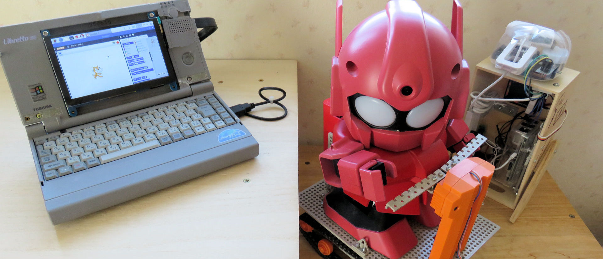

メンター、ボランティア の募集
2020年から小学校でプログラミング教育が必修化となりました。今はまだ多くの人が 単なるパソコン教育と誤解されているかも知れません。プログラミングは教えて習得 するよりは自分から学んで得意としていくものであり、また自ら学ぶ子は、同じ趣味 特技の仲間を作ることで成長します。そこで、７～１７歳を対象としたプログラ ミング仲間の集まれる場所作りをしたいと考えています。
まだ青梅市にはこのような活動が見つからないので、CoderDojo 青梅を立ち上げることを決断しました。 ぜひ青梅市および周辺地域の皆様のサポートをお願いします。


 I.Kano
I.Kano